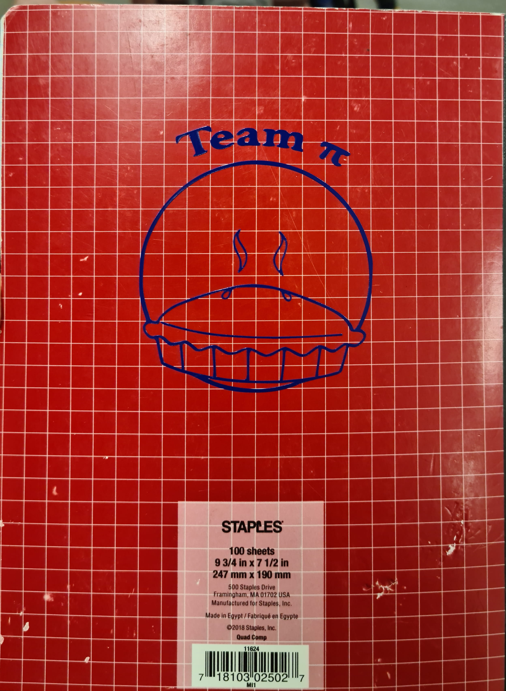

Week 4
Computer Aided Design.
This week's assignment is a little bit different from the previous assignments, because It consists of two assignments rather than one. The first part is the group assignment that requires describing our laser cutting machine by checking the focus, power, speed, rate, kerf, and joint clearance. The second part is the individual assignment that requires designing, cutting, and assembling a parametric press-fit construction kit. Also, we need to make a vinyl cutting using the vinyl cutter.

Vinyl Cutter
I designed a sticker for my book with our yeam logo. Our team name is Team pi so we decided to do something with that. I used Photoshop for the designing process.
- First we decided to use a design of a pie that we foundd from the web.

- Then I added a circle around it, placed it and erased a bit for it to look like an outline.
- Then i added the name of the team at the top and bent it around.

- After this I exported it as a png and opened it in a software called "Sure cuts a lot." We used this software because it is an extremely easy program which allows you to cut virtually any shape or graphic. With the combination of using your fonts, importing custom artwork and drawing your own shapes, the possibilities are endless. It was very easy to import the sketch into the software and cut it. All it took was selecting the design and clicking on the scissor tool.
Here are a few images.


Here is the final result of what it looked like.

Parametric Presskit Construction Kit
I wanted to create a miniature table for this.
- So for this, I started out by defining a few parameters such as height, width and depth.

- Then I drew a sketch using the parameters and constained it.
- I used the extrude tool and another parameter to make it 3 dimensional
- I Then sketched the table legs using the same process as above.

- This is what the 3d model looked at the end.

After this I used a software called slicer for Fusion 360 to cut the model into slices. The entire process was a bit long so i turned it into a Slide show you can scroll through below.


Now i downloaded these plans, ran them in illustrator to convert the size of the line. Afterwards, I fed the design in and the machine began cutting. You can see the process down below.


The final model after assembly looked like this:

Team Work

Now for the sake of efficency we didn't need to come up with something insane to cut out so we decided on a square.
- Let us first look at a few of these settings and understand them.
Power
It controls the power of the laser. We can see that when the power is to low, our material isn't cut through, and when it is too high it leaves burn marks on the material that we are cutting. So to optimize cutting we want it high enough so that it cuts through, but not so high that we have a material covered in ash.
Speed
The speed setting changes how quickly the laser moves about while cutting. We observed that when the speed setting is really high then we end up with a situation where the laser won't cut through entirely. We didn't cut at to slow a speed because should the laser be moving too slowly then the trailing fire behind the laser can spark a much larger fire, and that would be a saftey harzard.
Frequency
Frequency is the amount of time that the laser is on when things are being cut. From what we found in our testing, we didn't see any differences when changing frequency with the exception of if it is too low it won't cut.
Focus
Focus is making sure that the material that is being cut is in the right position so that it is in your lasers focal point. When we did tests to see how this was going to affect our cuts we had interesting results. Those being that we had almost no change. We did two tests one where the laser is further away from where it ought to be, and another where the material was nearly right next to the laser. In both instances we didn't see a shocking amount of difference. When I talked to a professor about this he said that we had the laser set up with a large depth of focus to make it less likely that the users would mess something up.
Typd
The type of laser cutter being used is an Epilog Fusion M2 40 laser.

Kerf
Kerf is the term used to describe the width of the laser. This was the main thing that we needed to use these experiments to figure out. So when we did each cut we measured to see how much it differed from the 2cm we had it set to. We found after our tests that there was about a half milimeter difference, with that being on both sides, we can divide the by two, and see thtat the kerf should be about a quarter of a milimeter.
{kind=link}